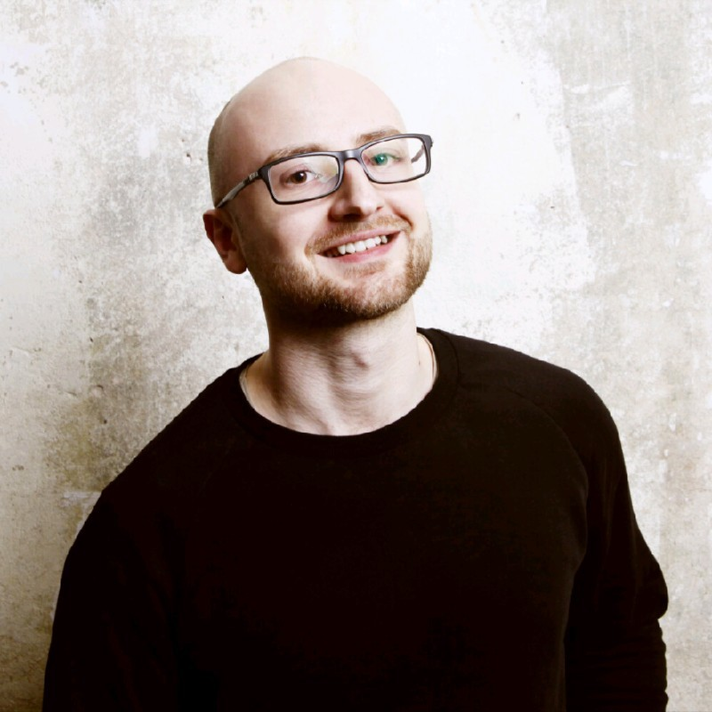

Jonathan Feigel

Summary
I'm Jonathan, 30 years old tech guy from Germany, living in Sofia, Bulgaria.
At the moment I am working as a Support Manager for the EMEA region in a compliance company.
To not forget my technical know how, I decided to dig into Web Development and maybe find a new hobby in that field.
Education
- Oberstufenzentrum Informationstechnik und Medizintechnik Berlin
Network and System Administration
2015 - 2018
Work Experince
- Kiteworks Bulgaria | Sofia, Bulgaria
March 2021 - Present
Senior Manager, Technical Services
- Leading an internation team of 6 professionals accross 4 countries
- Planing and executing technial support initiatives
- Facilitating seamliess collaboration among cross-functional team members.
- Act as a liaison between the technial services team and other departments.
- Conducting regular performance assesments
- eHealtTec | Berlin Germany
April 2019 - Februar 2021
IT Operations Manager
- Managed IT Operations and Support Services
- Implementing the software in customer environments
- Interface administration
- Live Go support
- ITDZ Berlin
September 2015 - March 2019
Linux Application Administrator
- Administration of RHEL 7 Server
- Conception and initialization of a company-wide logging solution with Elastic Stack
- Experince with containers, Openshift, PaaS, Microservices
Certifications
- DevOps
Pragmatic IT Learning & Outsourcing Center
- totemomail 7.0 Certified Engineer
totemo AG
- totemodata 3.0 Certified Engineer
totemo AG
Languages
Other
Contact me
Hobbies